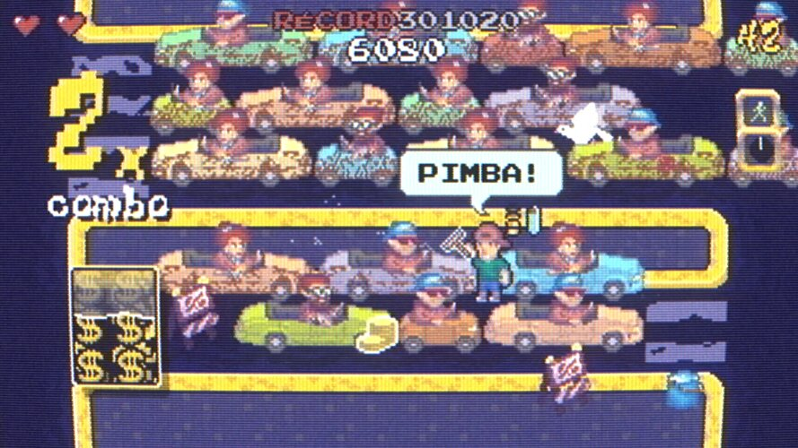
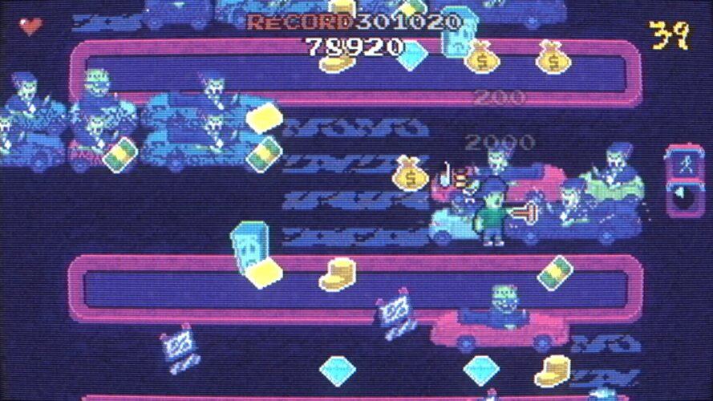
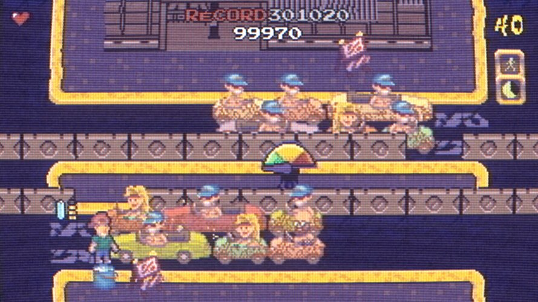

Liner Notes
A fast-paced arcade game about a squeegee man and his lost dog.
Limpiavidrio is a love project, and we had a blast building it. You play a squeegee man walking from city to city, cleaning cars stuck in traffic while looking for his lost dog, Toti.
It's a one-button game — a proper button smasher. Hammer it to clean, dodge whatever the road throws at you, and chain combos while the traffic keeps rolling underneath you. It's meant to be played on an arcade cabinet or with an arcade stick, where that single button feels best.
Between runs there are a few minigames, kept sparse on purpose: a calm, quiet space to rest before the next stretch of traffic.
It's a nod to the arcade cabinets and console games I grew up on.
It will be available on Steam Early Access soon. And if I raise enough money, I'll build a proper cabinet for it.
Long Play
A full playthrough, just over ten minutes long.
Mechanics
The game's own tutorial cards, one clip per mechanic, looping. The on-screen text is in Spanish, as in the game; the captions below translate it.
Side A
Every world reshuffles the palette, the hazards, and the traffic pattern, and each one has its own boss. The core loop stays the same: keep the squeegee moving, keep the combo alive, and don't get run over.



Credits